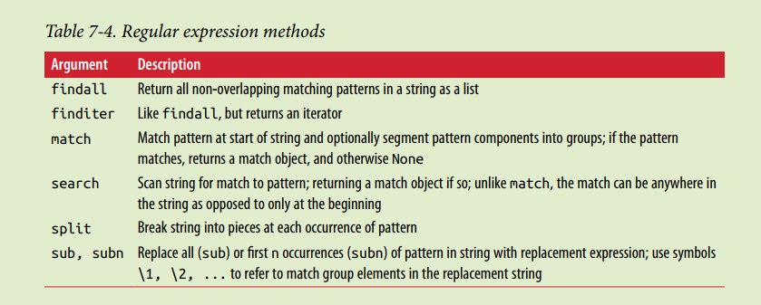

re

有了准备知识，我们就可以在 Python 中使用正则表达式了。Python 提供re模块，包含所有正则表达式的功能。
- re.compile(pattern, flags=0)： 将字符串形式的正则表达式编译为 Pattern对象。有的时候进行复杂的匹配，可以通过先对模式进行编译来加快匹配速度
- re.finditer(string, pos, endpos)： 从string任意位置开始匹配， 返回一个迭代器。 一般匹配findall就可以了， 大数量的匹配还是使用finditer比较好。
由于 Python 的字符串本身也用\转义，所以要特别注意：
s = 'ABC\\-001'因此我们强烈建议使用 Python 的**r**前缀，就不用考虑转义的问题了：
s = r'ABC\-001'首次匹配：match and search（）
- re.match(string, pos, endpos)： 从string的开头开始匹配。
re.search(string, pos, endpos)： 从string的任意位置开始匹配，默认返回第一次成功匹配（returns a special match object ）
import re source="My dear Friend Frank Jane xiaoming" pattern='dear' m=re.match(pattern,source) n=re.search(pattern,source) if m: print(m.group()) else: print("There is no match in match()") if n: print(n.group()) else: print("There is no match in search()")所有匹配
re.findall(string, pos, endpos)： 从string任意位置开始匹配， 返回一个列表。默认返回所有不重叠的匹配
import re source="My dear Friend Frank Jane xiaoming" pattern='e' m=re.findall(pattern,source) print(len(m))分割替换
re.split():根据pattern将source切分成若干段，返回由这些片段组成的列表
- re.sub()：与split()相似，需要一个额外的参数replacement，将source中所有匹配的pattern改成replacement.
sub切分后的索引方式比较特殊：import re source="My dear Friend Frank Jane xiaoming" pattern=' ' #字符串函数本身的分割方式 #m=source.split(pattern) m=re.split(pattern,source) print(m) n=re.sub('e','-',source) print(n)
用正则表达式切分字符串比用固定的字符更灵活，请看正常的切分代码：
>>> 'a b c'.split(' ')
['a', 'b', '', '', 'c']嗯，无法识别连续的空格，用正则表达式试试：
>>> re.split(r'\s+', 'a b c')
['a', 'b', 'c']无论多少个空格都可以正常分割。加入,试试：
>>> re.split(r'[\s\,]+', 'a,b, c d')
['a', 'b', 'c', 'd']如果用户输入了一组标签，下次记得用正则表达式来把不规范的输入转化成正确的数组。
匹配输出，分组group（）和groups()

除了简单地判断是否匹配之外，正则表达式还有提取子串的强大功能。用()表示的就是要提取的分组（Group）。比如：
^(\d{3})-(\d{3,8})$分别定义了两个组，可以直接从匹配的字符串中提取出区号和本地号码：
>>> m = re.match(r'^(\d{3})-(\d{3,8})$', '010-12345')
>>> m
<_sre.SRE_Match object; span=(0, 9), match='010-12345'>
>>> m.group(0)
'010-12345'
>>> m.group(1)
'010'
>>> m.group(2)
'12345'如果正则表达式中定义了组，就可以在Match对象上用group()方法提取出子串来。
注意到group(0)永远是与整个正则表达式相匹配的字符串，group(1)、group(2)…… 表示第 1、2、…… 个子串。
提取子串非常有用。来看一个更凶残的例子：
>>> t = '19:05:30'
>>> m = re.match(r'^(0[0-9]|1[0-9]|2[0-3]|[0-9])\:(0[0-9]|1[0-9]|2[0-9]|3[0-9]|4[0-9]|5[0-9]|[0-9])\:(0[0-9]|1[0-9]|2[0-9]|3[0-9]|4[0-9]|5[0-9]|[0-9])$', t)
>>> m.groups()
('19', '05', '30')这个正则表达式可以直接识别合法的时间。但是有些时候，用正则表达式也无法做到完全验证，比如识别日期：
'^(0[1-9]|1[0-2]|[0-9])-(0[1-9]|1[0-9]|2[0-9]|3[0-1]|[0-9])$'对于'2-30'，'4-31'这样的非法日期，用正则还是识别不了，或者说写出来非常困难，这时就需要程序配合识别了。
贪婪匹配
最后需要特别指出的是，正则匹配默认是贪婪匹配，也就是匹配尽可能多的字符。举例如下，匹配出数字后面的0：
>>> re.match(r'^(\d+)(0*)$', '102300').groups()
('102300', '')由于\d+采用贪婪匹配，直接把后面的0全部匹配了，结果0*只能匹配空字符串了。
必须让\d+采用非贪婪匹配（也就是尽可能少匹配），才能把后面的0匹配出来，加个?就可以让\d+采用非贪婪匹配：
>>> re.match(r'^(\d+?)(0*)$', '102300').groups()
('1023', '00')编译
当我们在 Python 中使用正则表达式时，re 模块内部会干两件事情：
- 编译正则表达式，如果正则表达式的字符串本身不合法，会报错；
- 用编译后的正则表达式去匹配字符串。
如果一个正则表达式要重复使用几千次，出于效率的考虑，我们可以预编译该正则表达式，接下来重复使用时就不需要编译这个步骤了，直接匹配：
>>> import re
>>> re_telephone = re.compile(r'^(\d{3})-(\d{3,8})$')
>>> re_telephone.match('010-12345').groups()
('010', '12345')
>>> re_telephone.match('010-8086').groups()
('010', '8086')编译后生成 Regular Expression 对象，由于该对象自己包含了正则表达式，所以调用对应的方法时不用给出正则字符串。